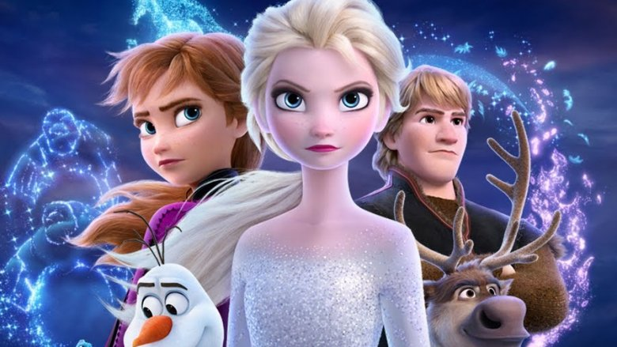
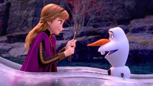
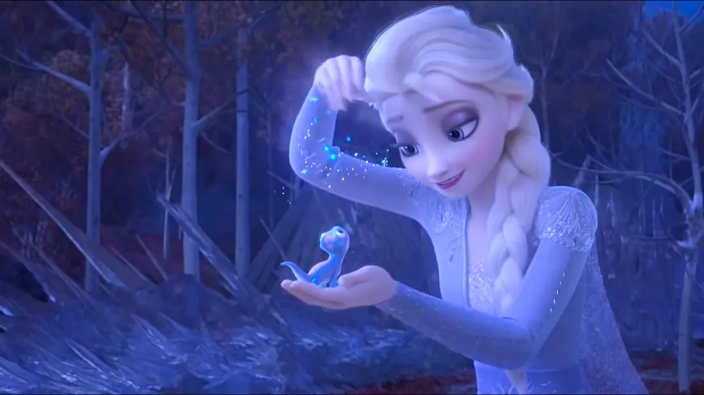
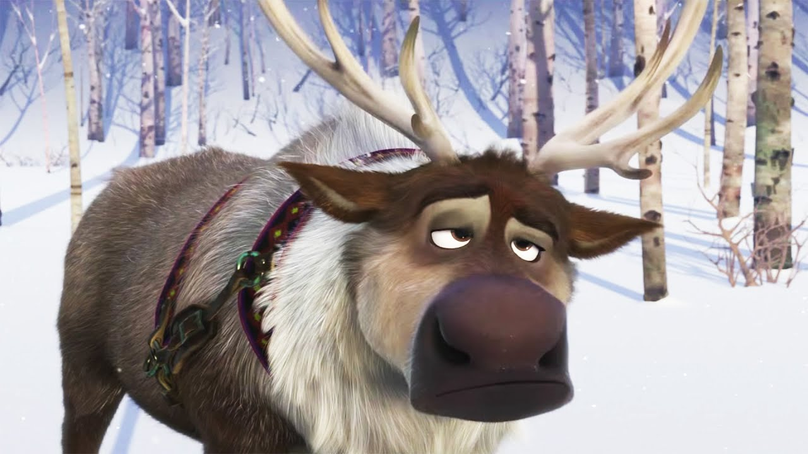

Elsa the Snow Queen and her sister Anna embark on an adventure far away from the kingdom of Arendelle. They are joined by friends, Kristoff, Olaf, and Sven.
   The animated adventure, which launched with a $130.3 million opening weekend, took in $12 million on Monday and an estimated $21 million on Tuesday. “Frozen 2” could add as much as $100 million to $120 million during the five-day Thanksgiving holiday period. It’s a new record for a Tuesday in November, easily topping the previous best of $16 million by “The Hunger Games: Catching Fire.” Lionsgate’s mystery comedy “Knives Out” is showing respectable results from preview showings with $1.7 million on Tuesday night in addition to $2 million from early screenings last weekend. “Knives Out” opens in 3,391 sites Wednesday amid strong reviews with a stellar 96% score on Rotten Tomatoes. The film, directed by Rian Johnson, centers on a family gathering that devolves when the patriarch (Christopher Plummer) dies after his 85th birthday party, leaving everyone a suspect. The cast includes Daniel Craig, Chris Evans, Ana de Armas, Jamie Lee Curtis and Toni Collette. “Knives Out” is produced by MRC and T-Street. Universal is opening another counter programmer on Wednesday with “Queen & Slim,” starring Daniel Kaluuya and Jodie Turner-Smith. It’s expected to earn $10 million from 1,500 theaters over the extended holiday. Melina Matsoukas, the filmmaker behind Beyonce’s “Formation” music video, directed the film, while Lena Waithe wrote the script. It has an 87% Rotten Tomatoes score. “Frozen 2″ is providing a much-needed jolt to the moviegoing business, which is down by 7% from the same point in 2018, according to Comscore. That gap may widen over the weekend since the 2018 Thanksgiving period set a record with $315.5 million over the five days as the box office was led by “Ralph Breaks the Internet,” “Creed II” and “Fantastic Beasts: The Crimes of Grindelwald.” “Frozen 2” comes six years after the original “Frozen,” which was a smash hit as the highest-grossing animated movie ever, raking in $400 million in North America and $1.28 billion worldwide in 2013. “Frozen 2” sees the return of the popular characters Elsa (voiced by Idina Menzel); her sister, Anna (Kristen Bell); Kristoff (Jonathan Groff); and Olaf (Josh Gad) as they venture beyond the kingdom of Arendelle to find out why Elsa was born with magical powers. “Knives Out” is expected to finish second with $20 million to $25 million during the five days while “Queen & Slim” should come in at about $10 million. Sony’s second weekend of “A Beautiful Day in the Neighborhood” and Disney-Fox’s third frame of “Ford v Ferrari” will also be contending for third place. “Ford v Ferrari” has topped $60 million in its first dozen days.